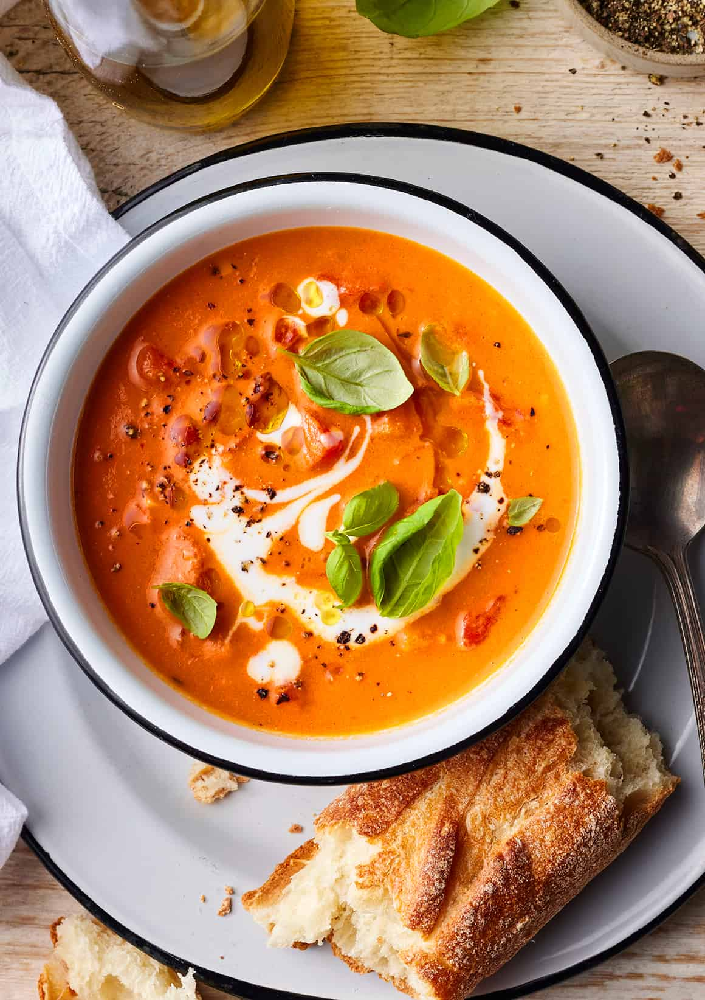

Soup Recipie

Description
The BEST tomato soup recipe! It's rich, flavorful, and made with pantry ingredients. Pair it with a grilled cheese for a delicious, comforting meal!
Ingredients
- Tomatoes
- Olive oil and butter
- Carrots, onion, and garlic
- Balsamic vinegar
- Vegetable broth
- Full-fat coconut milk or heavy cream
- Dried thyme
- Red pepper flakes
- Fresh basil leaves
- And salt and pepper
Steps
- First, sauté the veggies. Melt the butter in a large pot or Dutch oven over medium heat, and add the olive oil. Add the onion, carrots, garlic, and a pinch of salt, and cook, stirring occasionally, until the veggies soften, about 8 minutes.
Stir in the vinegar.
- Next, add the remaining ingredients and simmer. Add the canned tomatoes, water, coconut milk or heavy cream, thyme, red pepper flakes, salt, and several grinds of pepper. Simmer, stirring occasionally, until the carrots are tender, 20 to 25 minutes.
- Then, blend part of the soup. This step makes it sooo creamy! Scoop 4 cups of the soup out of the pot and set aside. Transfer the remaining soup to a blender, and blend until smooth. If you like, you could use an immersion blender for this step, though I prefer the smoother texture I get when I use my upright blender. Return the pureed soup to the pot, along with the 4 cups of chunky soup. Stir to combine.
- Finally, season to taste and serve. That’s it!
Home